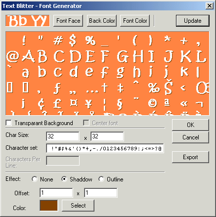

I realise that creating a character map from scratch, using a simple paint program, is a very difficult task. As a benefit to users, I have created a fast and effective way to accomplish this. The Font Generator is designed to allow you to create your own bitmap fonts from fonts on your system.
The Font Generator utility is a little primitive, but it includes several features. Special features, such as "outline" and "shadow" can automatically make your bitmap text more attractive.
This utility is not intended as the primary means to create your bitmaps. While it allows you to create bitmaps from fonts on the fly, it is really more useful as a way to create a template that can then be modified or enhanced externally with your favourite graphics tools.
The Internet contains many pre-built font bitmaps that you can download at the touch of a button. You can also create your own from image dumps from emulators, to get the effect console games used many eons ago.
[ WARNING: The character generator will remove your balloon image after generation... Make sure you backup or save your balloon data before generating a new font ]
Main
Character Setup
The image options give you general control over properties of the internal image
Effect
Using just a standard font can look fairly boring, the extra options allow you to spice your text up a little giving it different effects.
Options
Some standard options